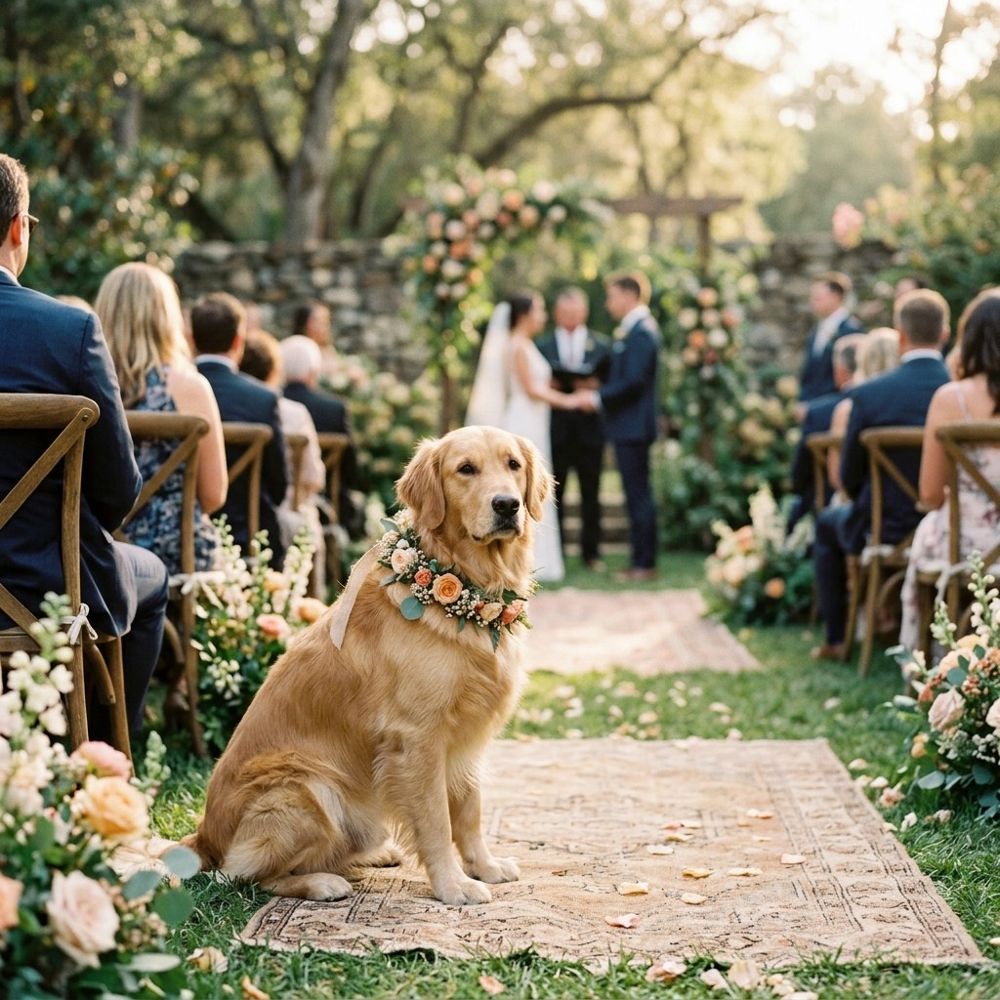

How to Include Your Dog in Your Wedding: A Stress-Free Guide

For many couples, leaving their furry best friend out of the most important day of their lives simply isn't an option. Having your dog serve as a ring bearer, a "flower pup," or simply standing by your side at the altar makes for incredible memories and fantastic photos.
However, weddings are chaotic, loud, and full of strangers. Without proper preparation, including your pet can quickly become the most stressful part of your wedding day. On The Wedding Police, we've seen perfectly planned pet appearances, and we've seen a golden retriever eat half a wedding cake. To ensure your pet's cameo goes smoothly, here are the three non-negotiable rules for including your dog in your wedding.
1. Train and Acclimate Them Early
Your dog might be a perfect angel at home, but a wedding venue is an entirely different environment. There are new smells, loud music, hundreds of people, and unusual outfits (that giant white dress can be very intimidating!).
- Practice the Walk: If they are walking down the aisle, practice the exact pacing and route multiple times, ideally at the actual venue during the rehearsal.
- Desensitize to Crowds: Take your dog to busy parks or outdoor cafes leading up to the wedding so they get used to sitting calmly while people bustle around them.
- Test the Outfit: If your dog is wearing a floral collar, a tiny tuxedo, or a bow tie, have them wear it around the house for several weeks before the wedding so they aren't scratching at it during the ceremony.
2. Hire a Designated Pet Handler
This is the biggest mistake couples make: they assign a bridesmaid, a groomsman, or a family member to watch the dog. Do not do this. Your wedding party and family are there to celebrate with you, take photos, and socialize. They cannot properly monitor an anxious dog.
You absolutely must have a designated pet handler whose only job is taking care of your dog. This person will make sure your dog has water, gets bathroom breaks, and is kept calm away from the noise when not needed for photos. We highly recommend hiring a professional wedding pet care service, but if that's not in the budget, hire a trusted dog sitter who is not a guest at the wedding.
3. Have a Strict "Exit Plan"
No matter how well-behaved your dog is, a wedding reception is no place for a pet. Once the ceremony and the formal photos are finished, the music gets loud, the dancing starts, and food inevitably gets dropped on the floor.
Your designated handler needs a clear exit plan. Decide exactly when the dog will leave the venue (usually right after cocktail hour photos) and where they will go. Whether they are being driven back to your home, a hotel room, or a boarding facility, arrange this transportation well in advance.
"The key to a successful pet wedding appearance is treating them like a VIP guest who needs to leave the party early. Get the photos, then let them go home and sleep!" — Jim, The Wedding Police
🎧 Hear the Full Episode: "Paws at the Altar"
Penny & Jim break down the funniest pet wedding disasters and interview a professional wedding pet handler on how to make your dog's cameo flawless. Listen free on Spotify & Apple Podcasts.